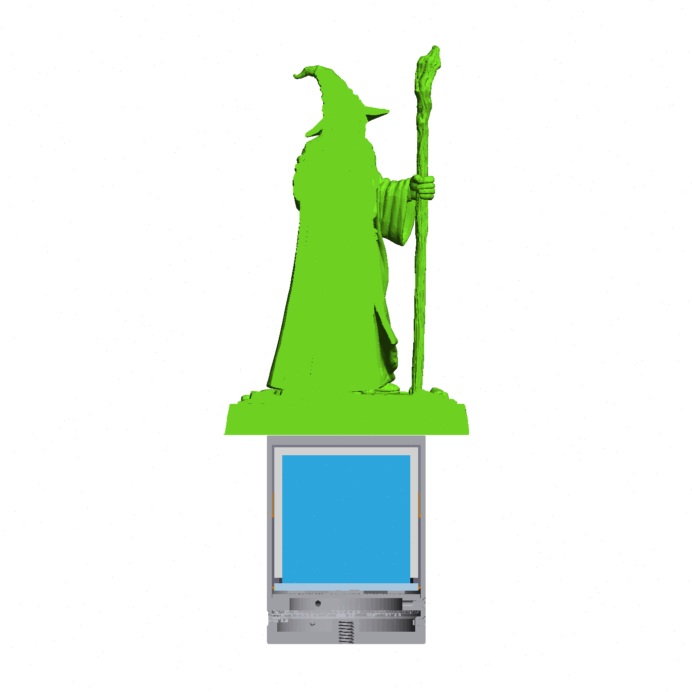
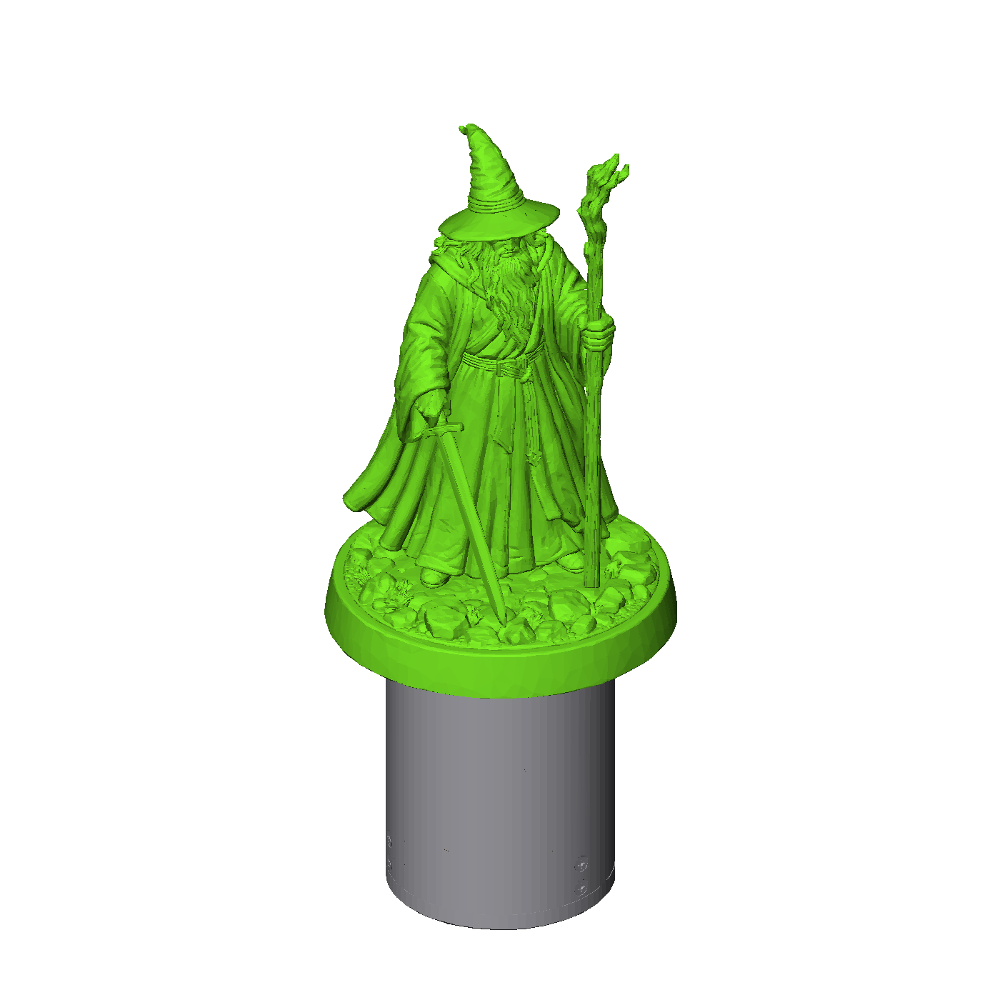

расчётный спектр · Atom GS2020 PRO MAX · NaI(Tl) Ø51×51 · модель Geant4
Численный эксперимент, а не измерение. Спектр синтезирован: отклики детектора, рассчитанные в Geant4 на распады в стекле статуэтки, измеренный фон лаборатории и пуассоновская статистика за 300 с. Затем спектр разложен по шаблонам второго, независимого набора расчётов (другие зёрна). Проверяется, что можно извлечь из такого спектра: активности, отношение U-235/U-238 и примеси. Ошибки модели и прибора такой замкнутый тест не обнаруживает.
Страница подготовлена с использованием ассистента на базе больших языковых моделей (Claude, Anthropic). Локальный черновик, не опубликован.
Статуэтка высотой 155 мм (модель gandalf.stl) стоит на торце корпуса прибора, основание на z = +41,5 мм по оси кристалла. Расчётная сетка упрощена до 4 896 граней: объём 247,4 см³, масса 618,4 г при плотности 2,50 г/см³. Рендеры сделаны Geant4 по более подробной сетке (48 970 граней).


| параметр | значение |
|---|---|
| стекло | калиево-известковое: SiO₂ 72,6; K₂O 12; CaO 10; Na₂O 3; UO₃ 2,4 % масс. (U 2,00 %, K 9,96 %); типичный состав принят без аналитического источника |
| возраст | 135 лет |
| уран при варке | природный, химически чистый: Th-230, Ra-226, Pa-231, Ac-227 накопились только распадом |
| физика | Geant4, EM option4, порог образования вторичных частиц 0,05 мм, флуоресценция и Оже-электроны включены; внутреннее тормозное излучение Pa-234m и K-40 — отдельными таблицами |
| фон | Фон лаба S31_18, 737 725 с, измерен без статуэтки |
| разрешение | ПШПВ по референсу тория |
| событий | набор синтеза 169 000 000, набор разложения 169 000 000 |
| не моделируется | наложение импульсов, мёртвое время, непропорциональность светового выхода, ослабление фона статуэткой; Fr-223 (1,38 % распадов Ac-227), Pb-210 и Bi-210 |
Подгонка полного спектра восемью шаблонами: каждый — сумма откликов Geant4 на распады нуклидов своей группы, свёрнутая с разрешением прибора; фон приведён по живому времени и не подгоняется. Свободны только амплитуды групп (неотрицательные). Заливкой показан вклад каждого слоя при найденной активности, красный пунктир — сумма отмеченных слоёв, чёрная линия — синтезированный спектр. Вкладки переключают окно подгонки.
Протяжка мышью по графику увеличивает выделенный диапазон, двойной клик возвращает полный. Погрешности — по ковариации подгонки; они не учитывают корреляции статистики шаблонов между каналами: в прежнем прогоне независимый бутстрэп дал разброс основных величин в 1,3–1,6 раза больше. χ²/ν занижен нижней границей дисперсии в 1 отсчёт (во многих каналах модель меньше одного отсчёта); при малых отсчётах ожидание девианса тоже не равно ν. Выше 1100 кэВ в канале единицы отсчётов — отсюда «гребёнка» измеренной кривой на логарифмической шкале.
| величина | задано | найдено, окно 25–2800 | природный уран |
|---|---|---|---|
| A(U-235)/A(U-238) | 0,0461 | 0,0457 ± 0,00036 | 0,0460 |
| отношение числа атомов 235/238 | 0,00725 | 0,00721 ± 0,000056 | 0,00725 |
| U-235, % масс. | 0,711 | 0,707 ± 0,0055 | 0,711 |
| масса урана, г | 12,37 | 12,4 ± 0,055 | — |
| масса калия, г | 61,6 | 71,0 ± 5,6 | — |
Обогащение получается из отношения активностей двух рядов урана, найденных разложением спектра на шаблоны Geant4. Отдельных «урановых» пиков в подгонке нет: каждая группа — полный отклик прибора на свои нуклиды, со всеми линиями, континуумом и рентгеном (шаблоны считались с флуоресценцией и Оже-эмиссией).
Допущения и ограничения.
| примесь | задано, Бк | найдено (окно 25–2800), Бк | масса, г | вывод |
|---|---|---|---|---|
| Ra-226 | 5,43 | не обнаружен, < 39 | < 1,1e-09 | не обнаружен |
| Th-230 | 189 | не обнаружен, < 24 000 | < 3,2e-05 | не обнаружен |
| Pa-231 | 20,1 | не обнаружен, < 380 | < 2,2e-07 | не обнаружен |
| Ac-227 | 15,5 | не обнаружен, < 56 | < 2,1e-11 | не обнаружен |
| Th-232 контроль нуля: при синтезе не вносился | 0 | не обнаружен, < 30 | < 7,4e-03 | не обнаружен |
Верхние границы — значение плюс 1,645 σ; у нуля амплитуды они консервативны. Ra-226, Th-230, Pa-231 и Ac-227 за 135 лет накопились до 5–190 Бк: при 300 с измерения и фоне урана 1,5·10⁵ Бк они не выделяются.
| энергия, кэВ | χ²/n в окне ±1,5 ПШПВ |
|---|---|
| 63,3 | 0,909 |
| 92,6 | 1,01 |
| 185,7 | 0,889 |
| 766,4 | 0,924 |
| 1001,0 | 0,986 |
| 1460,8 | 0,924 |